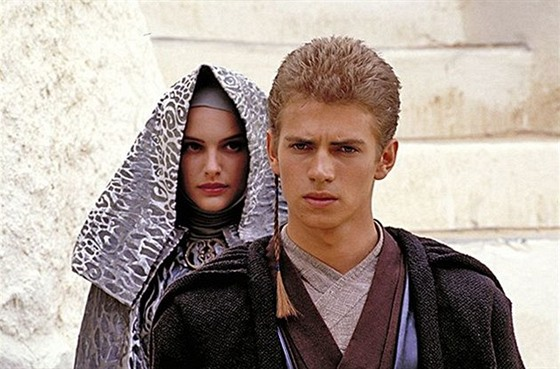
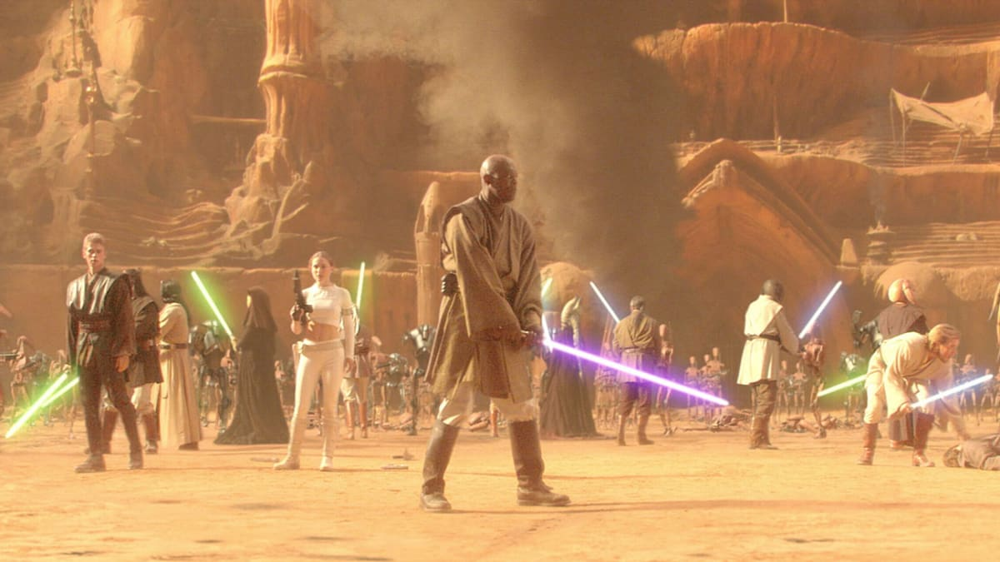
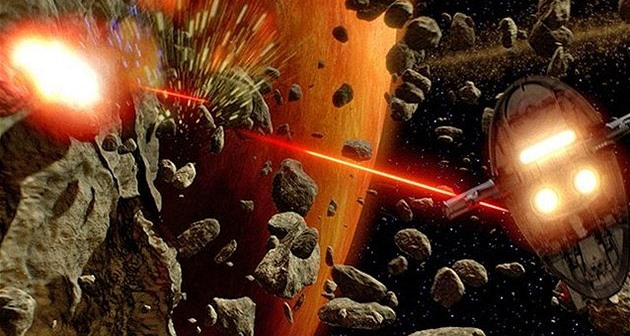
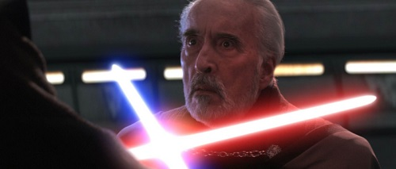
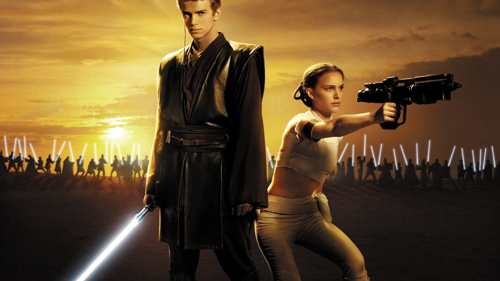

Shrnutí příběhu
Senátorka za Naboo Padmé Amidala přilétá na Coruscant hlasovat o zákonu proti svolání republikové armády kancléřem. Při přistávání je na ni spáchán atentát, při kterém však zemře pouze její dvojnice. Zmatená Padmé se domnívá, že atentát si objednal bývalý Jedi, hrabě Dooku. Rada Jediů s tímto podezřením ale nesouhlasí, i když usuzuje, že je třeba senátorku chránit a proto povolává dva rytíře Jedi, mistra Obi-Wan Kenobiho a jeho padawana (tj. učedníka), Anakina Skywalkera. Anakin má k Padmé ale silné citové pouto a nehodlá ji jen chránit, chce také vypátrat, kdo první atentát spáchal. Zdrženlivější Obi-Wan Anakina musí uklidnit, aby si uvědomil pravý stav věcí.
Atentát se ale následně při hlídce obou Jediů opakuje, ale Obi-Wan a Anakin tentokrát atentátníka chytí. Než jim však řekne, kdo ho objednal, je zabit jedovatou šipkou, kterou vystřelí nájemný lovec v mandalorianské zbroji. Obi-Wan zjišťuje, že šipka byla vyrobena na planetě Kamino, kterou někdo vymazal z archivu rytířů Jedi, a tak se vydává tuto planetu hledat. Anakin má zatím chránit Padmé, která se chce vrátit na Naboo. Rada Jediů Anakina tak na tuto samostatnou misi vyšle, přičemž kancléř Palpatine ho upozorňuje, že je mocnější, než aby plnil takové "podřadné" úkoly. Na Naboo se Anakin do Padmé zamiluje a následně ji i políbí, ale protože rytíři Jedi nemohou mít vztahy, tak se rozhodnou nezamilovat se.
Obi-Wan po příletu na Kaminu zjišťuje, že si zde jedijský mistr Sifodyas objednal armádu klonů pro republiku, před deseti lety. Vzorem pro klony je mandalorianský bojovník a nájemný lovec Jango Fett. Obi-Wanovi je představena celá armáda ve své mohutnosti a Obi-Wan poznává, že Jango Fett je pravděpodobně onen nájemný lovec, co chtěl zavraždit Padmé. Po hlášení radě Jediů se proto vydá Fetta konfrontovat, ten se ale ubrání a se svým synem Bobou Fettem prchá. Obi-Wan ho pronásleduje na planetu Geonosis, kde nachází základnu Obchodní federace. Zjišťuje, že se zde formuje koalice Separatistů pod vedením hraběte Dooku, nyní jako sithského lorda, do které se chystá vstoupit mnoho finančních i industriálních galaktických klanů, přičemž vlastní obrovskou, právě vyráběnou armádu droidů. Poté, co odvysílá zprávu o tom, co objevil, je ale zajat a uvězněn.
Mezitím Anakin s Padmé odlétají na Tatooine hledat Anakinovu matku, protože Anakin má noční můry o její smrti. Zjišťují, že ji zajali Píseční lidé. Anakin se ji vydává zachránit, ale přichází pozdě a ona mu umírá v náručí. Poté Anakin ve vzteku zabije všechny Písečné lidi a slibuje si, že již nikdy nenechá umřít nikoho, na kom mu záleží.
Obi-Wan se setkává ve vězení s hrabětem Dooku, který se ho snaží přemluvit, aby mu pomohl porazit temnou stranu. I přesto, že Obi-Wanovi v podstatě prozradí, že senátu vládne Darth Sidious, tak mu Kenobi nevěří a nepřidává se k němu. Na Coruscantu mezitím probíhají diskuse o tom, jak naložit s klonovou armádou, která je pro Galaktickou republiku vytvořena. Kancléř Palpatine šikovnou manipulací navede zástupce Padmé, senátora Jar-Jar Binkse, aby přednesl žádost, která by kancléři dala speciální práva na svolání armády. Jar-Jar to provede a celý senát za nadšeného aplausu dá kancléři speciální pravomoce. Mistr Yoda se tak okamžitě vydává na Kamino armádu vyzvednout, zatímco mistr Windu vezme 211 Jediů a vydává se na Geonosis za Obi-Wanem.
Anakin s Padmé se ale také vydají Obi-Wana vydají zachránit, ale jsou zajati též. Separatisté zavřou všechny tři do arény, aby je sežraly příšery. Padmé těsně předtím vyzná Anakinovi lásku a oba se znovu políbí. Během toho, co se brání všichni tři proti příšerám, objeví se Jediové mistra Windu, kteří se pustí do střetu s armádou droidů, která jim vyrazí vstříc. Po dlouhém boji jsou Jediové téměř zdecimování, ale naštěstí pro ně se objeví mistr Yoda s klonovou armádou, která zvrátí průběh bitvy. Jango Fett umírá rukou mistra Windu a velení separatistické aliance uniká pryč z planety. Armáda droidů se střetává s klonovanou armádou na pláni za arénou. Obi-Wan a Anakin pronásledují hraběte Dooku. Když jej dostihnou, bojují spolu, hrabě Dooku však oba porazí. Naštěstí přijde mistr Yoda a zachrání je, avšak hrabě Dooku prchá s plány hvězdy smrti. Anakin přišel v souboji o ruku. Padmé a Anakin odlétají zpět na Naboo, kde se tajně vezmou. Jediný důkaz o jejich manželství je listina, která je uložena do archivu. Kapitán Panaka (kapitán stráže Amidaly) se k ní však dostane a informuje o tom Palpatina, který tuto informaci později využije proti Anakinovi.
Armáda klonů poráží armádu droidů a hrabě Dooku přilétá na Coruscant oznámit Darth Sidiousovi, že velký sithský plán začal. Obi-Wan, Windu a Yoda mezitím přemýšlí nad tím, že by mohl temný lord ze Sithu ovládat senát, ale nakonec tuto možnost zavrhnou.
Na konci filmu se k nebi zvedají republikové lodě třídy Acclamator s desetitisíci klonovaných vojáků na palubách. Začíná Klonová válka.